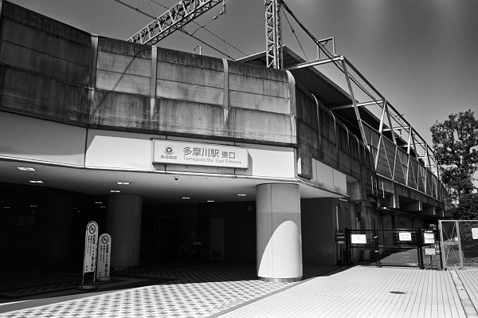
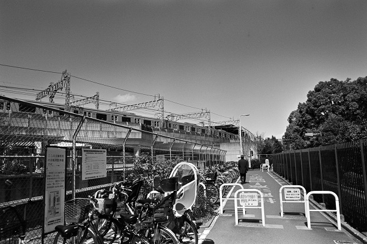
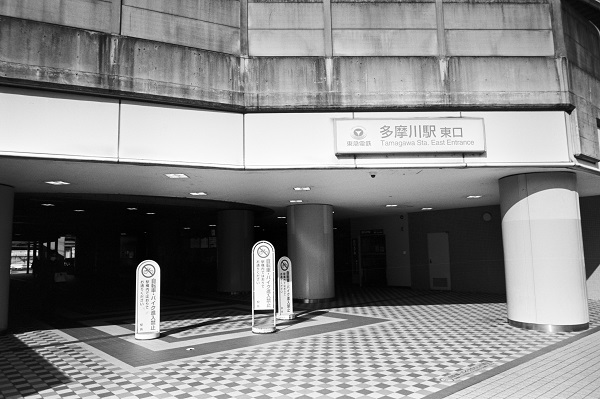
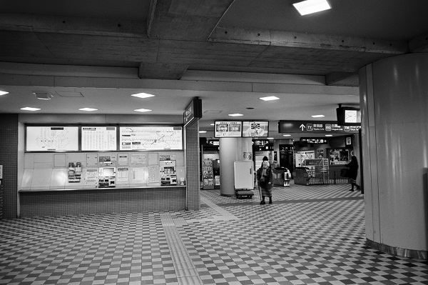
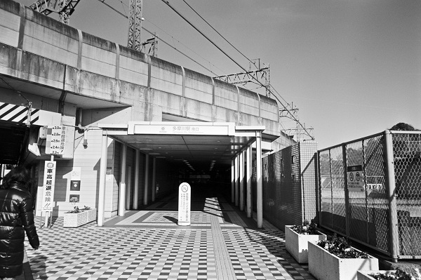

TY09_東急東横線 MG09_東急目黒線
TY_多摩川駅 Tamagawa
田園調布駅←← 東急東横線 →→新丸子駅
田園調布駅←← 東急目黒線 →→新丸子駅
東急多摩川線 →→沼部駅

2019/3/12 ﾍｷｻｰRF ｶﾗｽｺｰﾊﾟｰ25mm ｱｸﾛｽ

2019/3/12 ﾍｷｻｰRF ｶﾗｽｺｰﾊﾟｰ25mm ｱｸﾛｽ

2019/2/3 ﾐﾉﾙﾀCLE ｶﾗ-ｽｺｰﾊﾟｰ25mm ｱｸﾛｽ

2019/2/3 ﾐﾉﾙﾀCLE ｶﾗ-ｽｺｰﾊﾟｰ25mm ｱｸﾛｽ

2019/2/3 ﾐﾉﾙﾀCLE ｶﾗ-ｽｺｰﾊﾟｰ25mm ｱｸﾛｽ
戻る ﾎｰﾑ